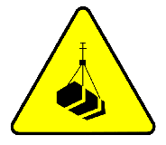

3.7.- Creación y utilización de clases derivadas.

Ya has visto cómo crear una clase derivada, cómo acceder a los miembros heredados de las clases superiores, cómo redefinir algunos de ellos e incluso cómo invocar a un constructor de la superclase. Ahora se trata de poner en práctica todo lo que has aprendido para que puedas crear tus propias jerarquías de clases, o basarte en clases que ya existan en Java para heredar de ellas, y usarlas de manera adecuada para que tus aplicaciones sean más fáciles de escribir y mantener.
La idea de la herencia no es complicar los programas, sino todo lo contrario: simplificarlos al máximo. Procurar que haya que escribir la menor cantidad posible de código repetitivo e intentar facilitar en lo posible la realización de cambios (bien para corregir errores bien para incrementar la funcionalidad).
Para saber más
Puedes echar un vistazo a este vídeo en el que se muestran algunos ejemplos de utilización de la herencia y clases derivadas. Está estructurado en tres partes:
Ejercicio resuelto
En el siguiente enlace puedes encontrar un ejercicio en el que se propone y resuelve un ejemplo de utilización de la herencia en Java. Consiste en la representación de tres tipos de trabajadores (o funcionarios, como son llamados en el ejemplo) de una empresa mediante la implementación de tres tipos de clases que deben heredar de una clase base común con la que compartirán algunos miembros (por el hecho de ser trabajadores). Los tres tipos de trabajadores son: Programador, Analista e Ingeniero.
Aquí tienes el enlace al primer vídeo en el que se propone y resuelve el ejemplo (está estructurado en cinco vídeos enlazados):
Ejercicio Resuelto
Implementación de la clase CasaDomotica
La clase CasaDomotica representa una vivienda con capacidades domóticas. Para ello dispone al menos de los siguientes atributos de instancia:
- un array de referencias a objetos de tipo
Dispositivocon cada uno de los posibles dispositivos domóticos (cerraduras, bombillas, etc.) que hay instalados en la vivienda; - una cadena de caracteres donde se indica el propietario;
- una cadena de caracteres con un texto descriptivo sobre la vivienda.
Esta clase dispondrá también de un único constructor que puede admitir una lista variable de parámetros de tipo Dispositivo junto con el propietario y la descripción:
public CasaDomotica(String propietario, String descripcion, Dispositivo... dispositivos)
Implementa el constructor de la clase CasaDomotica, así como la declaración de sus atributos.